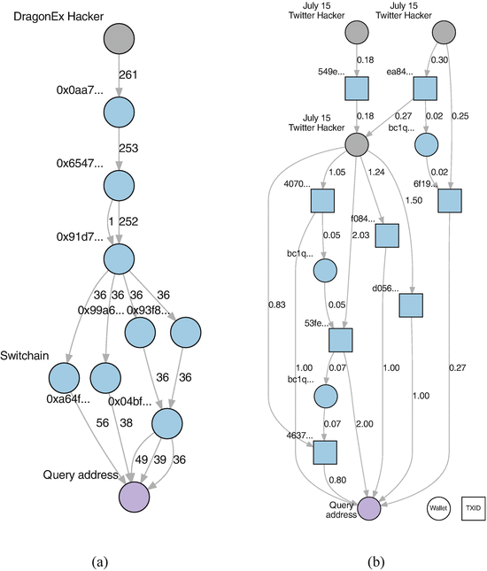

The problem
A single row rarely tells the full story.
Raw transaction traffic may show what happened. Investigators need timing, behaviour, and relationships to understand why it deserves review.
Synthetic event rows
10:02:11 wallet-A → wallet-B
10:02:28 wallet-A → wallet-C
10:02:46 wallet-A → wallet-D
10:03:01 IP changes · port shifts
10:03:18 wallet-A → wallet-E
… thousands more rows
→
Context is hiddenRows do not reveal a pattern by themselves.

TraceGraph AI transforms rows into relationships. It surfaces velocity, destination spread, IP rotation, and connected synthetic entities.
Illustrative transaction-relationship reference image; all TraceGraph demo data remains synthetic-only.